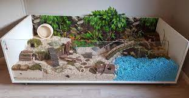
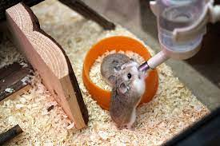

Cara Merawat Hamster
hamster adalah salah satu hewan yang paling banyak di pelihara karena visualnya yang mengemaskan dan mungil. merawat hamster bukan hal yang mudah namun juka sudah terbiasa pasti akan berasa tidak sulit.
berikut adalah tips dan cara merawat hamster:
-
memilih kandang

hamster membutuhkan rumah yang aman untuk menjelajah dan harusnya tempat itu memberikan rasa nyaman kepada hamster. berikan kandang yang banyak warna dan hiasan yang unik. pilih alas yang dapat digali, dan pastikan untuk memilih botol minum denga ukuran yang tepat seperti botol air yang tidak dapat dikunyah.
-
letakkan kandang di tempat yang tepat
penempatan sangat penting, sebaiknya meletakkan kandang hamster di dekat ruang keluarga karena hamster akan terhibur jika mendengar suara penghuni rumah namun jangan letakkan kandang di tengah keramaian karena hamster akan terganggu dan akhirnya mengalami stres.
-
tutupi kandang dengan kain tipis selama beberapa hari pertama
saat baru membawa pulang, hamster membutuhkan waktu untuk beradaptasi maka berilah waktu dan ruang untuk mereka tanpa gangguan. salah satunya dengan menutupi kandang dengan kain tipis namun sesekali kita harus mengajaknya bermain agar mempermudah adaptasinya.
-
tunggu beberapa hari sebelum mengeluarkannya dari kandang
hal ini berfungsi agar hamster merasa nyaman dan aman dengan kita saat mengajaknya bermain setelah diberikan makan dan minum dengan tangan kita agar hamster mengenali bau kita.
-
memberikan makanan diluar kebiasaannya

seperti halnya kita pasti akan bosan jika diberi makan yang sama setiap hari hamster pun juga seperti itu, maka dari itu sebaiknya kita memberikan camilan seperti buah buahan dan sayuran yang beragam. untuk lebih akurat silahkan tanyakan kepada dokter hewan tentang makanan terbaik untuk hamster.
-
membersihkan kandang secara teratur
kandang yang bersih dan nyaman dapat menghindari hamster dari stres namun jika membersihkannya terlalu sering juga dapat membuat hamster stres. bagian toilet sebaiknya bersihkan setiap hari, mengganti alas jika sudah basah atau kotor, tempat makan dan minum setiap minggu, setiap satu atau dua minggu bersihkan kandang dengan air sabun.
-
beri banyak waktu di luar kandang
buatlah pagar kecil di ruangan untuk hamster berjalan jalan berikan mainan dan camilan hal ini bertujuan agar hamster bisa menjelajahi tempat baru untuk menghilangkan stres dan juga agar dapat berinteraksi dengan anggota keluarga lainnya. selalu awasi merka saat di luar habitatnya.
-
rawat hamster dengan berhati hati
peganglah hamster dengan dua tangan dan di gendong dengan tangan ditangkup berhati hatilah agar hamster tidak jatuh. hamster hewan yang aktif di malam hari maka jangan ganggu mereka di siang hari.
gimana setelah membaca jenis dan cara merawat hamster apakah kalian tertarik untuk memelihara hamster? kalo mimin sendiri sudah memelihara dan sudah beranak juga.
jangan lupa untuk follow instagram mimin ya
instagram
papay~
©miloucing